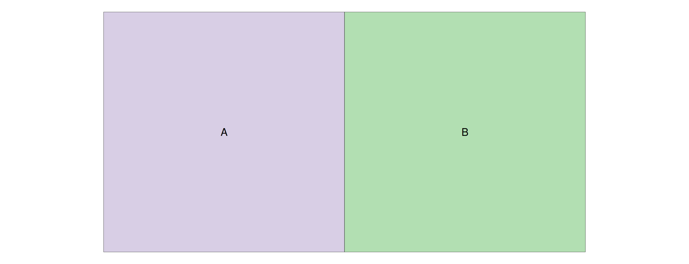
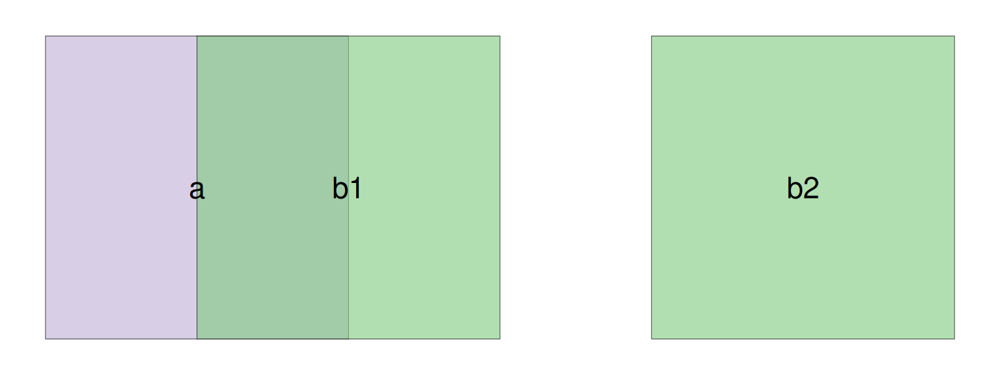
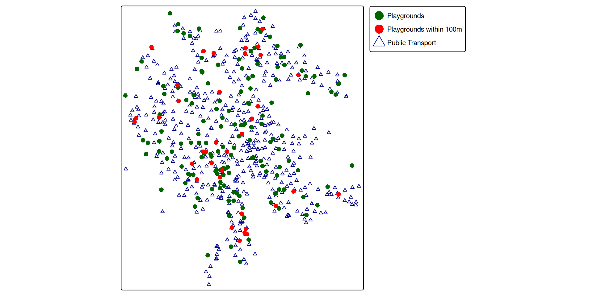
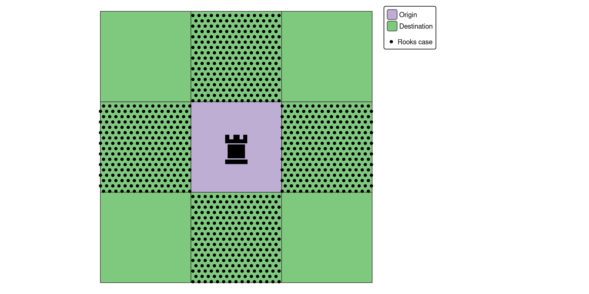

polygon <- st_sfc(st_polygon(list(cbind(c(0,1,1,0,0), c(0,0,1,1,0)))))
point_inside <- st_sfc(st_point(c(0.5, 0.5)))
point_on_boundary <- st_sfc(st_point(c(0, 0.5)))
st_contains(polygon, point_inside, sparse = FALSE) # TRUE
## [,1]
## [1,] TRUE
st_contains(polygon, point_on_boundary, sparse = FALSE) # FALSE
## [,1]
## [1,] FALSE
st_covers(polygon, point_on_boundary, sparse = FALSE) # TRUE
## [,1]
## [1,] TRUETopological relations
Quick recap: vector data
- In GIScience and Geodatabases, you learned about the Simple Features standard (ISO 19125)
- Features = geometry (point, line, polygon) + attributes (columns)
- In R:
sfobjects are data frames with a geometry column
. . .
- So far, we’ve worked with features mostly in isolation — reading, plotting, transforming
- But often we need to ask: how do two features relate to each other spatially?
- Does this river flow through this canton?
- Which bus stops are within this district?
- This is where topological relations come in
Named topological relations
- Topological relations describe the spatial relationships between objects
- Also called binary topological relationships or binary predicates
- Logical statements (
TRUE/FALSE) about two objects - The two objects are defined by ordered sets of points (typically forming points, lines and polygons) in two or more dimensions (Egenhofer and Herring 1990)
Usage
- Topological relations can be used to subset or join spatial data
- For example:
- Subsetting: Return all rivers that flow through the canton of Zurich
- Joining: For every train station, give me the name of the municipality it lies within
Common predicates in sf
- Most GIS software offers common topological relations as functions
sfprovides many:st_intersects(),st_disjoint(),st_touches(),st_crosses(), …- Each works slightly differently and fits different contexts
- Examples:
st_covers(x, y)→TRUEif no points ofxare outsideyst_touches(x, y)→TRUEif geometries share boundary points but interiors don’t intersect
Key predicates visualized

st_disjoint: no shared points

st_touches: shared boundary only

st_intersects: any shared points (here with overlap)

st_contains: B entirely within A
Symmetry and order
- Some relations are symmetrical (order doesn’t matter)
st_touches(x, y)=st_touches(y, x)
- Others are asymmetrical (order matters!)
st_contains(x, y)≠st_contains(y, x)
- Some require extra arguments
st_is_within_distance()needs adistargument
- Full list:
?geos_binary_pred
Contains, covers, within
- Easily confused — here’s the distinction:
st_contains(x, y): isyinsidex, with ≥1 point in the interior?st_covers(x, y): is every point ofyinside or on the boundary ofx?st_within(x, y): inverse ofst_contains— isxinsidey?
- Key difference: a point on the boundary is covered but not contained
- Tip: for point-in-polygon queries, prefer
st_covers—st_containsmisses points exactly on the boundary
Predicates vs. operations
ImportantDon’t confuse predicates with operations!
- Predicate (e.g.
st_intersects): “Do these geometries intersect?” → returnsTRUE/FALSE - Operation (e.g.
st_intersection): “Give me the geometry where they overlap” → returns a new geometry
The same naming pattern applies to other pairs: st_difference (operation) has no corresponding predicate, while st_touches (predicate) has no corresponding operation.
Predicate return types

st_intersects(x, y)does not return a simpleTRUE/FALSEvector- Returns a sparse geometry binary predicate (
sgbp) — a list of matching indices
st_intersects(a, b)
## Sparse geometry binary predicate list of length 1, where the predicate
## was `intersects'
## 1: 1lengths()counts the number of matches per feature- Use
sparse = FALSEto get a dense logical matrix instead
st_intersects(a, b, sparse = FALSE)
## [,1] [,2]
## [1,] TRUE FALSEApplying predicates: subsetting
Now that we know how predicates work, let’s use them to subset and join spatial data.
Spatial subsetting
- Predicates can be used to subset one dataset based on another
- Example data: playgrounds, public transport stops, and Stadtkreise in Zurich
library(sf)
library(readr)
# source: https://www.stadt-zuerich.ch/geodaten/
playgrounds <- read_sf("data/week4-exercises/playgrounds.gpkg")
publictransport <- read_sf("data/week4-exercises/public_transport.gpkg")
kreise <- read_sf("data/week4-exercises/stadtkreise-zh.gpkg")- Default predicate:
st_intersects - Example: which playgrounds lie within Stadtkreis 1?
kreis1 <- kreise[kreise$STADTKREIS == "Kreis 1", ]
playgrounds_k1 <- playgrounds[kreis1, ] # st_intersects is the default
nrow(playgrounds_k1)
## [1] 6Distance-based subsetting
- Not limited to topological predicates — can also use distance-based ones
- Example: which playgrounds are within 100m of a public transport stop?
# Using the shorthand notation
playgrounds_close <- playgrounds[publictransport,,op = st_is_within_distance, dist = 100]Same thing, more readable with st_filter():
playgrounds_close <- st_filter(playgrounds, publictransport, .predicate = st_is_within_distance, dist = 100)

From subsetting to joining
Subsetting filters features — what if we want to transfer attributes instead?
Spatial joins
- Joins transfer attributes from one dataset to another based on spatial relationship
st_join(x, y): for each feature inx, find matching features inyand attach their columns- Example: add the name of the nearest public transport stop to each playground
st_nearest_feature is not strictly a binary predicate, but is very useful for spatial joins. To make the example clearer, we first discard all unnecessary columns from the datasets.
publictransport <- publictransport[,"CHSTNAME"]
playgrounds <- playgrounds[, "name"]
playgrounds_join <- st_join(
playgrounds,
publictransport,
join = st_nearest_feature
)playgrounds_joinSimple feature collection with 184 features and 2 fields
Geometry type: POINT
Dimension: XY
Bounding box: xmin: 2677632 ymin: 1242927 xmax: 2687639 ymax: 1253914
Projected CRS: CH1903+ / LV95
# A tibble: 184 × 3
name geom CHSTNAME
* <chr> <POINT [m]> <chr>
1 Buchenweg (2685485 1245793) Zürich, Burgwies
2 Buchlern Sportanlage (2678406 1248303) Zürich, Friedho…
3 Mobile Spielanimation PAZMobile Spielanim… (2682898 1244212) Zürich, Rote Fa…
4 Alfred-Altherr-Terrasse (2684082 1249963) Zürich, Langens…
5 Auf der Egg (2682672 1243867) Zürich, Kalchbü…
6 Belvoirpark (2682665 1245835) Zürich, Brunaus…
7 Josefswiese (2681846 1248909) Zürich, Schiffb…
8 Gertrudplatz (2681431 1247583) Zürich, Locherg…
9 Wahlenpark (2683172 1252246) Zürich, Max-Bil…
10 Rote Fabrik (2683004 1244150) Zürich, Rote Fa…
# ℹ 174 more rowsJoin cardinality
playgrounds_joinhas the same rows asplaygrounds+ extra columnCHSTNAME- Why? Each playground has exactly one nearest station
- But row count can change with other join predicates!
- Within 100m: a playground may match zero or multiple stops
playgrounds_join2 <- st_join(
playgrounds,
publictransport,
join = st_is_within_distance,
dist = 100
)
nrow(playgrounds)
## [1] 184
nrow(playgrounds_join2)
## [1] 186playgrounds_join2Simple feature collection with 186 features and 2 fields
Geometry type: POINT
Dimension: XY
Bounding box: xmin: 2677632 ymin: 1242927 xmax: 2687639 ymax: 1253914
Projected CRS: CH1903+ / LV95
# A tibble: 186 × 3
name geom CHSTNAME
* <chr> <POINT [m]> <chr>
1 Buchenweg (2685485 1245793) <NA>
2 Buchlern Sportanlage (2678406 1248303) <NA>
3 Mobile Spielanimation PAZMobile Spielanim… (2682898 1244212) Zürich, Rote Fa…
4 Alfred-Altherr-Terrasse (2684082 1249963) <NA>
5 Auf der Egg (2682672 1243867) Zürich, Kalchbü…
6 Belvoirpark (2682665 1245835) <NA>
7 Josefswiese (2681846 1248909) <NA>
8 Gertrudplatz (2681431 1247583) <NA>
9 Wahlenpark (2683172 1252246) <NA>
10 Rote Fabrik (2683004 1244150) Zürich, Rote Fa…
# ℹ 176 more rowsJoin order
- Order matters (just like regular joins)
st_join= left join by default- Result keeps the geometry of the left dataset
kreise <- kreise[,"STADTKREIS"]
publictransport_join <- st_join(publictransport, kreise)
- Reverse order → each
stadtkreisgets duplicated for every intersecting point
kreise_join <- st_join(kreise, publictransport)
nrow(kreise)
## [1] 12
nrow(kreise_join)
## [1] 477kreise with 12 features
kreise_join with 477 features
Summary
| Task | Function | Key arguments |
|---|---|---|
| Test a relationship | st_intersects(), st_covers(), … |
sparse = FALSE for logical matrix |
| Subset by predicate | x[y, ] or st_filter() |
op / .predicate, dist |
| Join by predicate | st_join(x, y) |
join, left = TRUE |
- Default predicate is always
st_intersects - Prefer
st_coversoverst_containsfor point-in-polygon - Join order determines geometry and potential row duplication
Custom topological relations
A motivating problem
- Consider a 3×3 chessboard (Figure 4.1)
- Which fields share a full edge with the origin? (like a rook’s move)
st_toucheswon’t work — it also matches diagonal neighbours (shared point)- We need a way to express: “shared boundary must be a line, not just a point”

The DE-9IM
- DE-9IM (Dimensionally Extended nine-Intersection Model) gives fine-grained control
- DE-9IM is the formal model behind all named predicates
- Describes the relationship as a 3×3 matrix: interior, boundary, exterior of each geometry
- Table 4.1 shows the analysis for two overlapping polygons
- Rows = parts of geometry A (blue),
- columns = parts of geometry B (red).
- Each cell shows what the intersection of that row-part with that column-part looks like.
- The dark shading in each cell is the resulting intersection.
- Walk through a few cells:
- top-left (Interior ∩ Interior) yields an area,
- top-middle (Interior ∩ Boundary) yields a line,
- middle-middle (Boundary ∩ Boundary) yields two points.
| Interior (B) | Boundary (B) | Exterior (B) | |
|---|---|---|---|
| Interior (A) | ![]() |
![]() |
![]() |
| Boundary (A) | |
![]() |
![]() |
| Exterior (A) | ![]() |
![]() |
![]() |
F***1****
| Interior | Boundary | Exterior | |
|---|---|---|---|
| Interior | F | * | * |
| Boundary | * | 1 | * |
| Exterior | * | * | * |
- Each cell shows the intersection of a part of A (row) with a part of B (column)
- For the rook, we only care about two cells:
- Interior ∩ Interior =
F(no overlap) - Boundary ∩ Boundary =
1(shared edge = a line, not just a point)
- Interior ∩ Interior =
- Everything else =
*(don’t care) - Flatten row by row into the pattern →
F***1****
This is what distinguishes edge-sharing (rook) from corner-sharing (bishop) neighbours: for a bishop, Boundary ∩ Boundary = 0 (a point), while for the rook it must be 1 (a line). The encoding is: F = empty, 0 = point, 1 = line, 2 = area. * means “any value” and T means “any non-empty value” (i.e. 0, 1, or 2).
Predicates as patterns
- Every named predicate = one or more DE-9IM patterns
| Predicate | DE-9IM pattern(s) |
|---|---|
st_intersects |
T********, *T*******, ***T*****, ****T**** (any non-empty intersection) |
st_touches |
FT*******, F**T*****, F***T**** |
st_contains |
T*****FF* |
st_within |
T*F**F*** |
st_containsandst_withinare mirror images (swap rows ↔︎ columns)*= wildcard, matchesF,0,1, or2
- The exact values
0,1,2describe the dimension of the intersection (point, line, area). - In patterns,
Tmeans “any non-empty intersection” - i.e. it matches0,1, or2but notF. - So
Tis used when you care that something intersects but don’t care how (point vs line vs area), while0/1/2pin down the exact dimension.
st_relate: explore
- Without
pattern: returns the actual DE-9IM string for each pair - Useful for exploration → inspect strings, then decide which pattern to match
st_relate(grid_orig, grid_dest) [,1] [,2] [,3] [,4] [,5] [,6]
[1,] "FF2F01212" "FF2F11212" "FF2F01212" "FF2F11212" "FF2F11212" "FF2F01212"
[,7] [,8]
[1,] "FF2F11212" "FF2F01212"st_relate: match
- Pass a
patternargument → returnsTRUE/FALSE(sparse matrix, like named predicates)
st_relate(grid_orig, grid_dest, pattern = "F***1****")Sparse geometry binary predicate list of length 1, where the predicate
was `relate_pattern'
1: 2, 4, 5, 7Create a custom st_rook function and use it like any named predicate:
st_rook <- \(x, y) st_relate(x, y, pattern = "F***1****")
grid_rook <- grid_dest[grid_orig, , op = st_rook] |>
st_sample(1000, type = "hexagonal",by_polygon = TRUE)

Wrap-up
- Named predicates (
st_intersects,st_covers, …) cover most use cases for subsetting and joining - When they don’t suffice, DE-9IM patterns let you define custom relations (
st_relate) - Key pitfalls to remember:
st_containsvsst_covers(boundary matters!)- Join order determines geometry and row count
- Predicates return sparse index lists, not logical vectors (use
sparse = FALSEif needed)